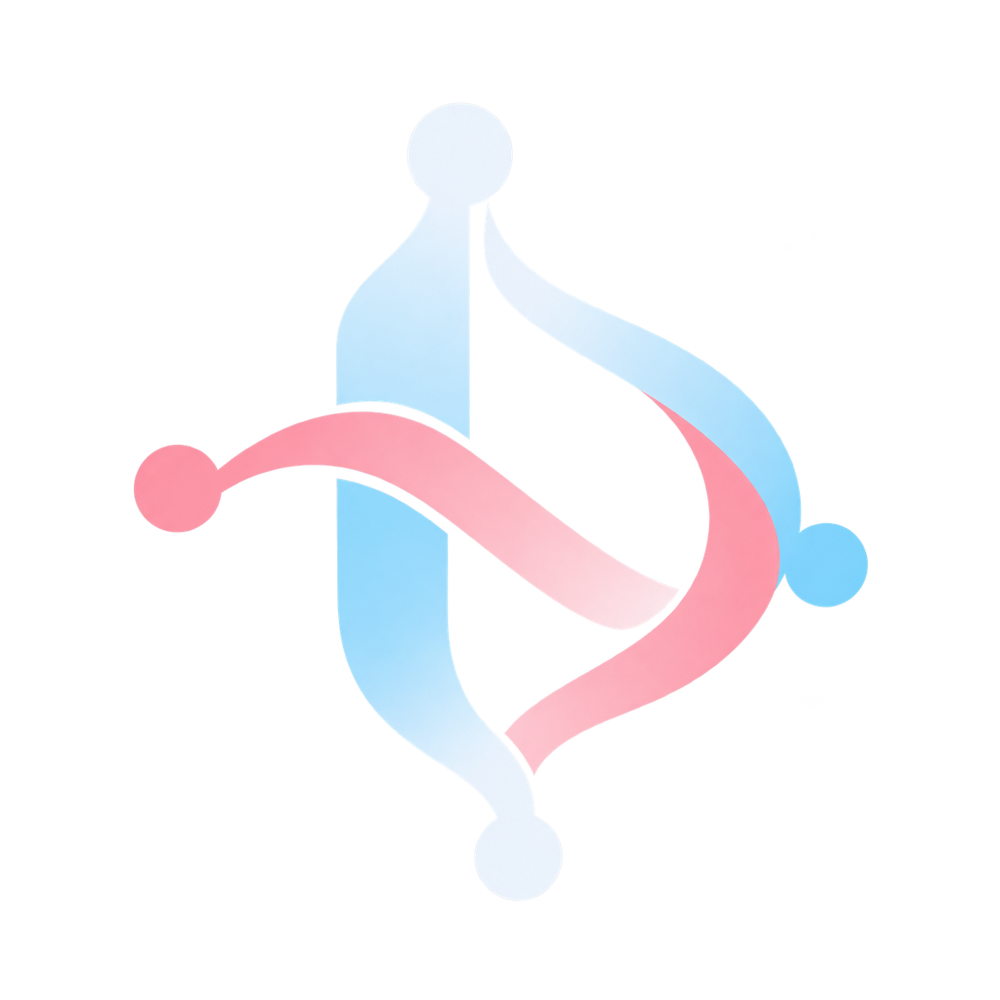

A canvas for connected stories.
Give your story
somewhere to go.
Build interactive roadmaps, branching stories,
and portfolios people can explore.

A canvas for connected stories.
Build interactive roadmaps, branching stories,
and portfolios people can explore.
